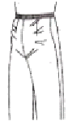
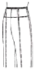
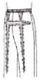
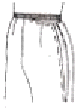
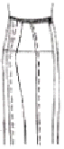
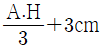
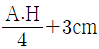
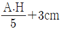
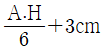

양장기능사 (2013-10-12 기출문제)
1과목: 임의 구분
1. 제도에 필요한 부호 중 다음 부호가 의미하는 것은?(오류 신고가 접수된 문제입니다. 반드시 정답과 해설을 확인하시기 바랍니다.)
- 골선
- 완성선
- 안단선
- 꺾임선
(정답률: 68%)

2. 다음 중 스커트 원형에서 웨이스트 밴드를 대는 형의 스커트 길이로 가장 옳은 것은?
- (스커트 길이-밴드너비/2)
- (스커트 길이-밴드너비/4)
- {스커트 길이-(밴드너비+2cm)}
- {스커트 길이-(밴드너비+4cm)}
(정답률: 63%)
3. 인체의 계측이나 치수를 잴 때 사용하는 용구로서 가장 적합한 것은?
- 직각자
- 곡자
- 측도자
- 줄자
(정답률: 93%)
4. 세미 타이트 스커트의 안감 박기에 대한 설명 중 가장 적합하지 않은 것은?
- 안감은 완성선보다 0.2cm 정도 시접 쪽으로 나가서 받는다.
- 다트를 박아 시점을 겉감과 같은 쪽으로 접는다.
- 왼쪽 옆 솔기를 받아 시접을 앞 쪽으로 꺾는다.
- 올이 풀리기 쉬운 옷감은 시접 끝을 한 번 접어 받는다.
(정답률: 53%)
5. 뒤 허리 밑에 수평의 주름이 생겨 뒤 허리선을 내려주고, 뒤 다트 길이를 길게 하는 체형은?(오류 신고가 접수된 문제입니다. 반드시 정답과 해설을 확인하시기 바랍니다.)
- 하복부가 나온 체형
- 엉덩이가 처진 체형
- 엉덩이가 나온 체형
- 엉덩이가 나오고 복부가 들어간 체형
(정답률: 78%)
6. 스판 니트의 원형 제도 시 고려해야 할 내용 중 틀린 것은?
- 직물 원형 제도 방법과 같게 한다.
- 옷감의 신축성을 고려한다.
- 다트는 생략하거나 다트 분량을 가능한 한 적게 한다.
- 패턴은 디자인과 옷감의 늘어나는 방향에 따라 다르게 제도한다.
(정답률: 71%)
7. 오건디와 같은 얇은 옷감에 가장 적합한 재봉기 바늘은?
- 7호
- 9호
- 11호
- 16호
(정답률: 65%)
8. 다음 중 단춧구멍의 크기로 옳은 것은?
- 단추지름 + 1cm
- 단추지름 × 2
- 단추지름 + 단추두께
- (단추지름×2) + 단추두께
(정답률: 83%)
9. 옷감과 패턴의 배치 방법으로 옳은 것은?
- 패턴의 종선 방향을 옷감의 횡선에 맞추어 배치한다.
- 옷감의 표면이 밖으로 되게 반을 접어 패턴을 배치한다.
- 패턴은 작은 것부터 배치하고, 큰 것은 사이에 배치한다.
- 줄무늬는 옷감의 줄을 바르게 정한 다음 배치한다.
(정답률: 93%)
10. 가장 기본이 되는 스커트로서 타이트 스커트(tight skirt)라고도 하는 것은?
- 고어 스커트(gored skirt)
- 플리츠 스커트(pleated skirt)
- 플레어 스커트(flared skirt)
- 스트레이트 스커트(straight skirt)
(정답률: 86%)
11. 다음 중 심지를 붙여야 할 곳으로 가장 알맞은 곳은?
- 소매산
- 칼라
- 소매통
- 안감
(정답률: 94%)
12. 다음 중 길과 연결하여 구성된 소매는?
- 타이트 소매(tight sleeve)
- 퍼프 소매(puff sleeve)
- 케이프 소매(cape sleeve)
- 기모노 소매(kimono sleeve)
(정답률: 86%)
13. 다음 중 실표나 시침실을 뽑을 때 사용하는 공구로서 가장 적합한 것은?
- 끌
- 뼈인두
- 송곳
- 족집게
(정답률: 83%)
14. 인체를 몸통과 사지로 구분할 때 몸통에 해당되지 않는 것은?
- 머리
- 가슴
- 목
- 팔
(정답률: 76%)
15. 칼라 끝이나 옷 솔기에 끼워 장식하는 것으로 옷감과 같은 색 또는 다른 색으로 만들어 장식하여 효과를 내는 것은?
- 턱킹(tucking)
- 파이핑(piping)
- 스모킹(smocking)
- 패거팅(fagoting)
(정답률: 83%)
16. 계측방법 중 뒤에서 좌ㆍ우 어깨 끝점 사이의 길이를 재는 항목은?
- 등너비
- 어깨너비
- 등길이
- 가슴둘레
(정답률: 84%)
17. 원형의 제도법에 대한 설명 중 옳은 것은?
- 단촌식 제도법은 초보자에게 적당한 방법이다.
- 단촌식 제도법은 각자의 치수를 정확하게 계측하여야만 몸에 잘 맞는 원형이 구성된다.
- 장촌식 제도법은 계측 항목이 많다.
- 장촌식 제도법은 신체 각 부위의 치수를 섬세하게 계측한다.
(정답률: 76%)
18. 일반적인 스커트 원형에서 가로의 기초선 길이로 가장 적합한 것은?
- 엉덩이둘레/2+0.5~1cm
- 엉덩이둘레/2+2~3cm
- 엉덩이둘레/2+4~5cm
- 엉덩이둘레/2+6cm
(정답률: 71%)
19. 공업용 재봉기의 표시기호 중 대분류에서 본봉에 해당하는 것은?
- L
- C
- D
- F
(정답률: 64%)
20. 스커트 원형 제도에서 필요하지 않은 항목은?
- 엉덩이둘레
- 허리둘레
- 스커트길이
- 밑위길이
(정답률: 93%)
2과목: 임의 구분
21. 소매 뒤에 소매산을 향해 주름이 생길 때의 보정 방법으로 가장 옳은 것은?
- 소매 중심점을 뒤로 옮긴다.
- 소매 중심점을 앞으로 옮긴다.
- 소매산을 높여준다.
- 소매산을 내려준다.
(정답률: 49%)
22. 다음 중 시착 시 유의해야 할 관찰 방법 중 틀린 것은?
- 옆선ㆍ어깨선이 중앙에 놓였는가
- 허리선ㆍ밑단선이 수평으로 놓였는가
- 옷감의 올이 사선으로 놓였는가
- 칼라의 형ㆍ크기가 적당한가
(정답률: 80%)
23. 시접을 완전히 감싸는 방법으로, 세탁을 자주 해야 하는 아동복을 만들 때 이용하는 바느질 방법은?
- 평솔
- 원솔
- 통솔
- 접음솔
(정답률: 88%)
24. 다음 그림과 같이 배가 나와서 배부분이 너무 낄 경우의 보정으로 옳은 것은?





(정답률: 71%)
25. 외출복의 소매산 높이로 가장 적합한 것은?




(정답률: 63%)
26. 의복 원형 종류에 따른 용도가 틀린 것은?
- 길 원형-상반신용
- 스커트 원형-하반신용
- 슬랙스 원형-하반신용
- 소매 원형-하반신용
(정답률: 92%)
27. 다음 중 겉감의 기본 시접 분량으로 가장 옳은 것은?
- 어깨와 옆선 : 5cm
- 목둘레선 : 1cm
- 허리선 : 3cm
- 스커트단 : 2cm
(정답률: 94%)
28. 바지 길이의 계측 방법으로 옳은 것은?
- 옆허리선에서 무릎까지의 길이를 잰다.(오른쪽 뒤에서)
- 옆허리선에서 발목까지의 길이를 잰다.(오른쪽 뒤에서)
- 등길이를 계측하여 허리선을 지나 바닥까지의 길이를 잰다.(왼쪽 뒤에서)
- 목뒤점부터 허리둘레선까지의 길이를 잰다.(왼쪽 뒤에서)
(정답률: 88%)
29. 다음 중 길 원형의 필요수치에 해당되지 않는 것은?
- 가슴둘레
- 등길이
- 어깨너비
- 소매길이
(정답률: 86%)
30. 옷감의 표시방법으로 틀린 것은?
- 실표뜨기는 직선일 때는 간격을 넓게 뜬다.
- 실표뜨기는 곡선일 때의 간격을 좁게 뜬다.
- 초크를 사용할 때는 선명하고 가늘게 표시한다.
- 트레이닝 페이퍼를 사용할 때는 선명하고 굵게 표시한다.
(정답률: 82%)
31. 천연섬유 중 섬유의 길이가 가장 긴 것은?
- 견
- 마
- 면
- 양모
(정답률: 74%)
32. 다음 중 축합중합체섬유가 아닌 것은?
- 폴리아미드
- 폴리우레탄
- 폴리염화비닐
- 폴리에스테르
(정답률: 59%)
33. 다음 중 해충이나 미생물의 침해를 받지 않는 섬유는?
- 면
- 견
- 양모
- 아세테이트
(정답률: 84%)
34. 실에 꼬임수가 많아짐에 따라 나타나는 현상은?
- 광택이 강하다.
- 부드럽고 유연하다.
- 부푼 실을 얻을 수 있다.
- 딱딱하고 까슬까슬해진다.
(정답률: 68%)
35. 섬유의 대전성을 낮게 하는 방법으로 옳은 것은?
- 습도를 감소시킨다.
- 흡습성을 증가시킨다.
- 염가소성을 좋게 한다.
- 강도와 신도를 증가시킨다.
(정답률: 63%)
36. 삼각형 모양의 단면을 가지고 있는 섬유는?
- 양모
- 면
- 아마
- 견
(정답률: 78%)
37. 다음 중 방적사에 비해 필라멘트사의 특성에 해당되는 것은?
- 흡습성이 좋다.
- 열가소성이 풍부하다.
- 인장강도와 신도가 약하다.
- 함기량이 많아 보온성이 좋다.
(정답률: 42%)
38. 견섬유의 성질에 대한 설명 중 틀린 것은?
- 습윤상태에서는 강도가 줄어든다.
- 다른 섬유에 비해서 내일광성이 좋다.
- 연소시험에서 불꽃 속에 넣었을 때 머리카락 타는 냄새를 내면서 탄다.
- 염색성이 좋아서 염기성ㆍ산성ㆍ직접염료에 의해 잘 염색된다.
(정답률: 49%)
39. 섬유의 내약품성에 알칼리에는 약하나 산에 강한 섬유는?:
- 마
- 양모
- 나일론
- 비스코스레이온
(정답률: 55%)
40. 다음 중 비중이 가장 큰 섬유는?
- 면
- 나이론
- 유리섬유
- 폴리에스테르
(정답률: 47%)
3과목: 임의 구분
41. 다음 중 시선을 한 점에 동시에 고정시키려는 색채 지각 현상에 해당되지 않는 것은?
- 보색 대비
- 한란 대비
- 색상 대비
- 채도 대비
(정답률: 62%)
42. 색의 대비에 대한 설명으로 틀린 것은?
- 어떤 색이 주변색의 영향을 받아서 실제로 다르게 보이는 현상이다.
- 동시 대비는 서로 가까이 놓인 두 색 이상을 동시에 볼 때 생기는 색채 대비이다.
- 색상 차가 커 보인다는 것은 색상환에서 서로 거리가 먼 쪽에 위치한다는 것이다.
- 보색 대비는 잔상 현상과 관계가 있다.
(정답률: 73%)
43. 의복의 넓은 벨트에서 나타나는 형태적인 지각으로 가장 적합한 것은?
- 선
- 면
- 점
- 입체
(정답률: 56%)
44. 색광의 3원색을 모두 합치면 나타나는 색상은?
- 노랑
- 자주
- 흰색
- 검정색
(정답률: 71%)
45. 색명의 표시 기호 중 주황에 해당하는 것은?
- 5Y8/12
- 5R4/12
- 5YR6/12
- 2.5RP3/5/11
(정답률: 77%)
46. 4계절 중 봄 분위기와 어울리는 의복색이 아닌 것은?
- Salmon pink
- Ivory
- Mustard
- Pale lilac
(정답률: 58%)
47. 색의 밝고 어두운 정도를 나타내는 것은?
- 명암
- 채도
- 명도
- 색상
(정답률: 65%)
48. 색의 대비 중 인접한 두 색의 색상 대비, 명도 대비, 채도 대비 현상이 더욱 강하게 일어나는 것은?
- 연변 대비
- 한란 대비
- 보색 대비
- 계시 대비
(정답률: 45%)
49. 다음 중 중성색이 아닌 것은?
- 연두
- 남색
- 보라
- 파랑
(정답률: 72%)
50. 색의 조화 중 서로 공통성을 지니고 있어 안정적이고 통일된 분위기를 주는 것은?
- 부조화
- 삼각조화
- 대비조화
- 유사조화
(정답률: 88%)
51. 섬유의 안전 다림질 온도가 가장 옳은 것은?
- 견 : 120℃
- 아마 : 230℃
- 양모 : 180℃
- 트리아세테이트 : 220℃
(정답률: 58%)
52. 의류의 세탁방법에 대한 설명 중 틀린 것은?
- 아세테이트 섬유는 80℃ 정도의 세탁실에서는 변형이 없다.
- 비스코스 레이온 섬유는 강알칼리성 세제에 의해 손상이 된다.
- 셀룰로스 섬유는 내알칼리성이 좋다.
- 경수 또는 철분이 함유된 세탁용수는 피한다.
(정답률: 54%)
53. 다음 중 드레이프성이 가장 좋지 않은 작물은?
- 견
- 서지
- 모시
- 나일론
(정답률: 63%)
54. 다음 중 해충의 해를 가장 많이 받는 양모제품은?
- 가늘고 강직한 섬유로 실의 꼬임이 많은 작물
- 가늘고 부드러운 섬유로 실의 꼬임이 적은 작물
- 두꺼운 섬유로 실의 꼬임이 많은 편물
- 두꺼운 섬유로 실의 꼬임이 적은 편물
(정답률: 60%)
55. 물에 잘 녹으며 중성 또는 약산성에서 단백질 섬유에 잘 염착되고 아크릴 섬유에도 염착되는 염료는?
- 분산염료
- 직접염료
- 산성염료
- 염기성염료
(정답률: 50%)
56. 5매 수자직에서 사용 가능한 띔수는?
- 2, 3
- 3, 5
- 2, 5
- 1, 2, 3
(정답률: 60%)
57. 다음 중 환원 표백제에 해당하는 것은?
- 아염소산나트륨
- 과탄산나트륨
- 과봉산나트륨
- 아황산수소나트륨
(정답률: 56%)
58. 의복의 종류별 요구 성능에서 예복에서 가장 요구되는 것은?
- 외관
- 내구성
- 관리성
- 안정성
(정답률: 81%)
59. 한 올 또는 여러 올의 실을 바늘로 고리를 형성하여 얽어 만든 피륙은?
- 직물
- 편성물
- 부직포
- 브레이드
(정답률: 52%)
60. 다음 중 방추 가공과 관계가 없는 작물은?
- 면
- 양모
- 마
- 비스코스 레이온
(정답률: 48%)